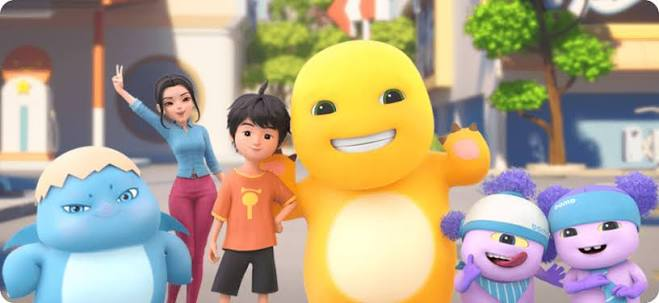
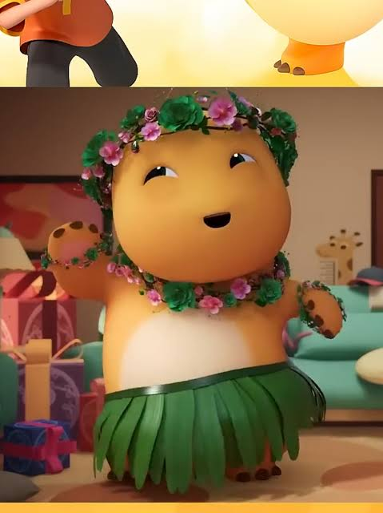
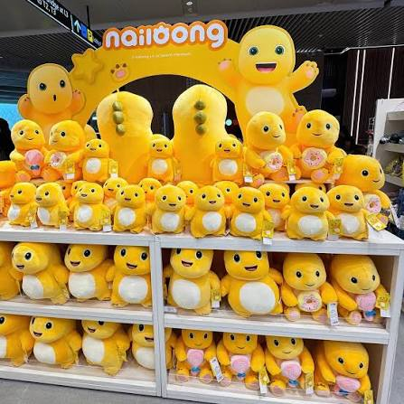

deskripsi nailong
Siapa Nailong?
Nailong (奶龙, "naga susu") adalah karakter kartun 3D berwujud naga atau dinosaurus kuning yang bertubuh bulat dan gemuk. Wajahnya yang polos, gerakannya yang goyang-goyang, dan ekspresinya yang lucu membuat siapa pun mudah menyukainya.

Asal-usul
Nailong diciptakan oleh Seventh Impression Culture & Media, sebuah studio dari Shenzhen, Tiongkok. Mereknya didaftarkan pada 2020, dan stiker WeChat resmi pertamanya dirilis pada Oktober 2021 sebelum akhirnya populer di Douyin.
Sahabat: Xiao Qi
Nailong selalu ditemani sahabatnya, Xiao Qi, anak cerdas yang sering mengajaknya bertualang. Keduanya tinggal di sebuah desa yang tenang, dan persahabatan mereka menjadi inti dari hampir semua ceritanya.
Kepribadian
Nailong digambarkan polos, ceria, dan pencinta makanan. Ia sering tergoda makanan enak padahal sedang berusaha diet, dan justru sifat apa adanya itulah yang membuat banyak orang merasa dekat dengannya.

Fenomena Viral
Pada 2024, akun Nailong di platform video pendek Tiongkok telah mengumpulkan puluhan juta pengikut. Pada Agustus 2025 ia ikut meledak di TikTok dunia, antara lain lewat tren topi bucket Gucci dan tarian "Wo Shi Nailong" yang berarti "Aku Nailong".

Merchandise
Popularitasnya merambah ke dunia produk: boneka, gantungan kunci, hingga blind box MINISO. Karena itu Nailong sering disebut lebih sebagai IP (kekayaan intelektual) dengan banyak lini produk daripada sekadar serial TV.